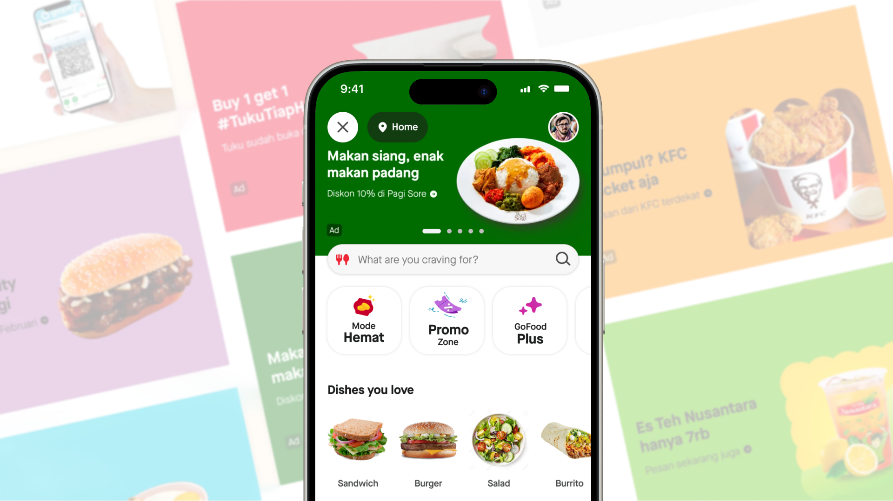
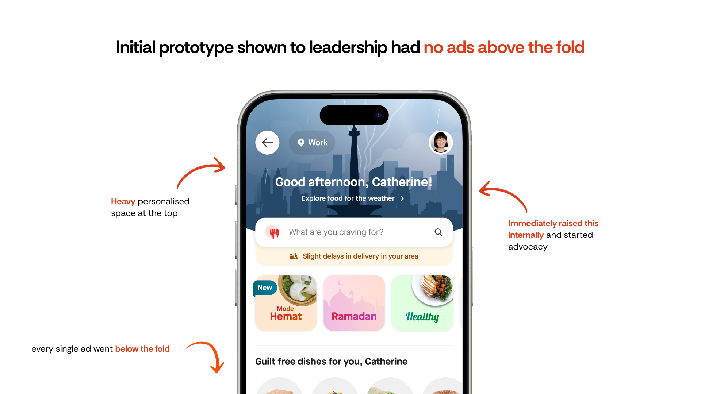
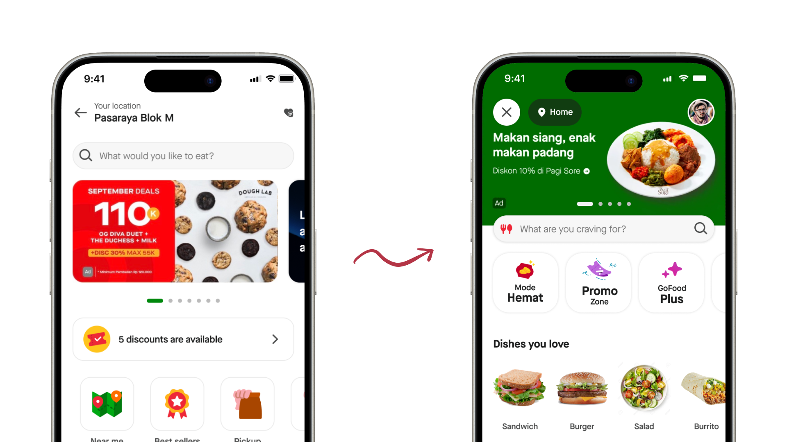
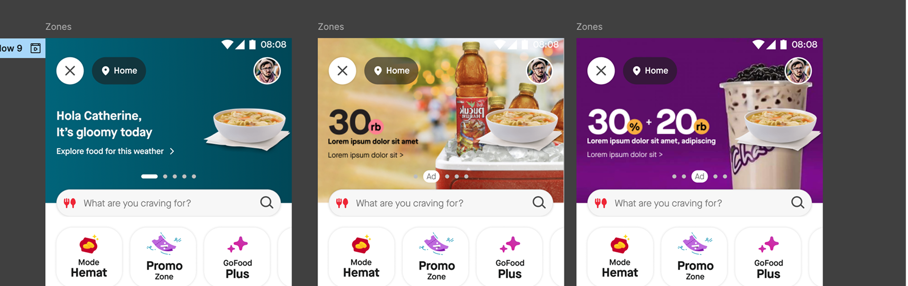
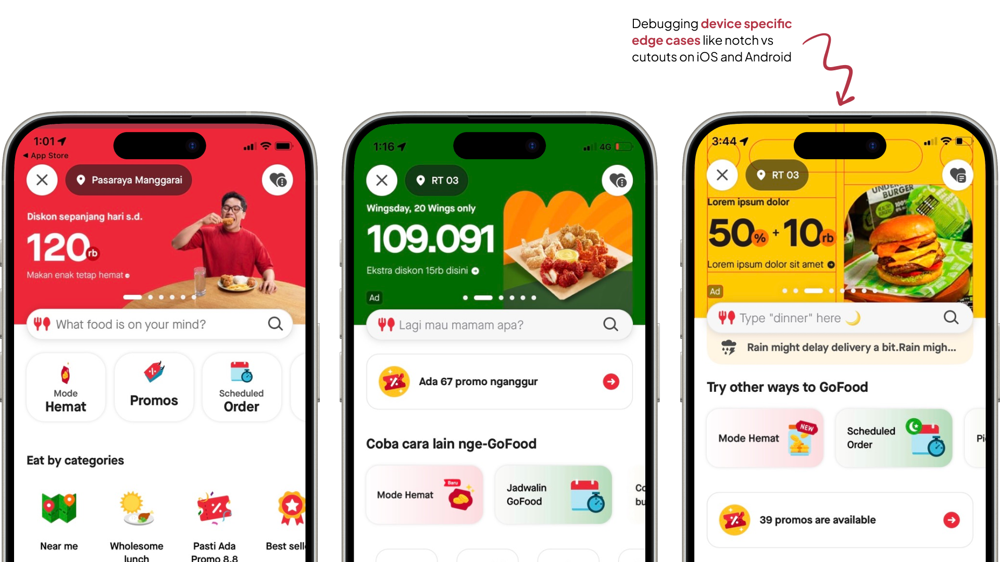
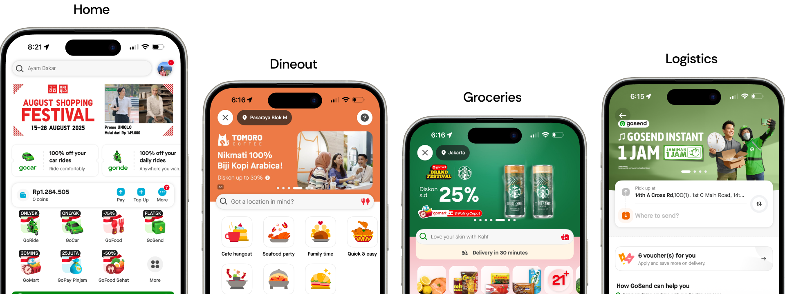
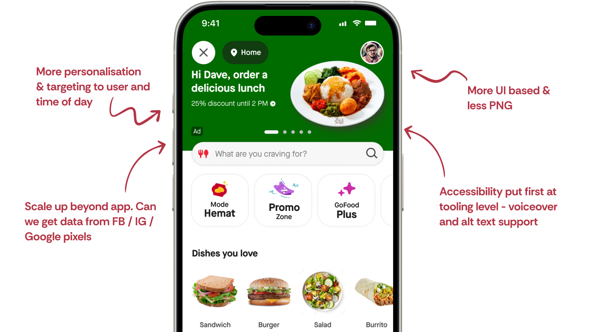

Masthead ads: fighting for a seat at the table
How we embedded ads into GoFood's redesign and created the platform's most successful ad format
At Gojek I designed consumer advertising across Southeast Asia's super-app ecosystem, at a scale of ~30 million monthly active users across Indonesia and Vietnam, balancing merchant ROI, user experience, and platform scalability. This is the story of Masthead - the premium ad format we fought to get into GoFood's redesign. It builds on the ads design system I owned, and sits alongside a banner CTR experiment covered separately.

The problem: we weren't invited
In late 2022, GoFood was undergoing a complete redesign. This was a massive initiative - GoFood generated the majority of Gojek's revenue. But here's the problem: the ads team, responsible for $11.3 million in revenue, wasn't included in the redesign.
We were literally going to be an afterthought.

"I couldn't let ads become a band-aid on a redesigned product."
The existing state was broken
- Banner ads occupied prime real estate but had low engagement
- Overload of information and busy design compromised readability and perceived value
- Users didn't consider carousel banners to be useful and often skipped them
- Too many banners, often considered irrelevant and not personalised, leading to banner blindness

The fight: writing our way in
So my fellow designer Shreya (my counterpart on merchant tooling) and I wrote a strategic document - 'Principles for embedding APP inside GoFood ads.' We didn't wait for permission. We wrote it, aligned it with Maji, our design manager, and presented it directly to Julee, the GoFood VP.
Three strategic principles
1. Revenue continuity — how do we ensure new ad formats don't lead to negative business outcomes?
- Earlier forecasting on ad inventories to ensure BAU revenue baseline
- Go-to-market strategy with transitionary phases (start selling new format before launch)
- Bouncing back from failures - multiple rollout scenarios prepared
2. Systemic approach — ads exist as part of a larger ecosystem. How do we manage that experience?
- Cater for real demand - More complex ad formats require deeper investment from advertisers
- Ads are not limited to GoFood - Unifying principles across Gojek app (Transport, Logistics, etc.)
- Accommodate merchants & internal Gojek needs - Ensure consistency across ecosystem
3. Scope of expansion — balance building new vs optimising existing formats
- Accommodate existing design goals while being open to rapid experimentation
- Robust governance to dictate which content goes where, how, and when
- Maintain integrity of overall GoFood consumer experience
The document worked.
We got embedded in the redesign with clear responsibilities through the DARCI model. We secured 70% capacity allocation for our designers. This wasn't given to us - we fought for it by showing the revenue risk.
"Because we got involved early, ads weren't retrofitted - they were native to the new experience. We protected the $16 million revenue stream and set a precedent that ads must be considered in every major product decision."

Managing the chaos: stakeholder alignment
Getting embedded was just the start. I had to align with business about relevancy metrics, with designers about which touchpoints we'd own. Each conversation required different framing - revenue for business, user experience for product, technical feasibility for engineering.
Ads stakeholders
- Ads PMs & Biz teams
- Ad Sales
- My design manager
- Senior designers, UXW, UXR
GoFood stakeholders
- Food VP Business & Product
- Food PMs & EMs
- VP Design
- Design leads & managers, Design PgM
Aligning goals across teams
GoFood's goal
Show users food content as early as possible to trigger cravings leading to improved engagement and transactions. Make users transact via non-search flows when there is a clear intent.
Ads team's goal
Improved clarity and readability of ad assets to aid in user decision making on purchase. Increase ad revenue and ROAS for merchant and brand partners.
The solution: Masthead ads
We designed a premium ad format that would solve the banner blindness problem while respecting user experience.

Design principles for Masthead
Clear & Concise
Keep text minimal and impactful
Rich visuals
High-quality images, colors, fonts + engaging media formats
Relevant & Targeted
Show banners specific to target audience segments

Early prototypes to make the case
I quickly mocked up prototypes to share with leaders to make the case for a new ad inventory. The goal was to show, not tell. One thread I explored here was surfacing "ad" as part of the nav metadata — labelling content by type right in the navigation. We couldn't build it in the end, blocked by design-system tech feasibility, but the question stuck with me: why can't nav show what type of content it is?

The hard part: making it scalable
As I iterated on UI, challenges emerged:
- Merchants had near-infinite requirements
- Guidelines had to work in both Indonesia & Vietnam
- Had to preserve the "wow factor" while being systematic

Scoping merchant & brand use cases
Worked with PM, biz and ad sales to consolidate Merchant / Brand jobs-to-be-done and define:
- Slot structure for different use cases
- CPM model that worked for various advertiser sizes
- Use case taxonomy (brand awareness, promotions, new launches, etc.)

Creating visual & copy guidelines
Worked with Creative Design + UXW on copy and design rules that could:
- Encompass all merchant/brand JTBDs
- Stay cohesive with Gojek branding
- Be internationalisable (Indonesia & Vietnam)
- Maintain quality standards at scale

Rollout & governance
Rollout meant debugging, working with devs and biz, handling device-specific edge cases. We debugged on test devices and alpha builds to make sure the ad rendered correctly across screen sizes. The real challenge was Android: dozens of manufacturers, each with their own specs for notches, cutouts, and safe areas, and we needed a consistent view experience across all of them. But the real work started after launch.

Masthead ad governance
Merchants would come back to us with feedback and requests. I had to create a workflow to implement changes in the ad sales & design process:
- Process to take in feedback from merchants and ad sales
- Review mechanism with design, product, and business
- Update and version Masthead guidelines
- Communicate changes back to all stakeholders
Once it was running, we started getting actionable merchant feedback almost immediately, which helped us prioritise and act on issues instead of guessing at them.

Impact in GoFood
- 21% — Increase in banner CTR
- 2x — Increase in CTB rate (click to buy)
- 3mn — USD Incremental revenue
- 2x → 4.5x — ROAS for merchants driven by improved creative, messaging and readability
Most successful ad inventory - Masthead became the most successful ad format and was rolled out across the entire Gojek consumer app, not just GoFood.

What I wanted to do next
Success doesn't mean we were done. I had a roadmap of improvements:
UI only goes so far
Most gains came from personalisation and targeting, not just visual design. I explored how Masthead could integrate into offline and social media channels to create a cohesive brand experience.
Technical constraints we hit
- Limited to 3rd party PNGs due to tech maturity constraints - harder to customise and A/B test variations
- Image only - no support for voiceover or video
- Accessibility gaps - Carousel is an inaccessible format. Wanted to add accessibility in ads creation tools and at design system level

What did I learn?
- How to present to big decision makers and get people on board with a vision
- When to step up - sometimes you don't wait for permission, you make the case
- When to bring others along - collaboration across teams is what makes systemic change stick
- Strategic thinking matters - The document we wrote wasn't just design work, it was business strategy